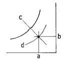

건축설비산업기사 (2002-05-26 기출문제)
1과목: 건축일반
1. 사무소 건축에서 층고가 낮을때의 장점으로 거리가 먼것은?
- 같은 높이에서 더 많은 층수가 나오므로 경제적이다.
- 건물에너지 절약면에서 효과적이다.
- 공기조화 부하를 낮출 수 있다.
- 승강기 승객수송능력을 높일 수 있다.
(정답률: 알수없음)

2. 콘크리트 블록조의 누수원인을 기록한 것 중 잘못된것은?
- 줄눈시공의 불량에 의한 것
- 블록 자체를 투수하는 것
- 블록의 빈속을 모두 채우지 않기 때문
- 블록의 건조 수축에 의한 줄눈 또는 블록자체의 균열에 의한 것
(정답률: 55%)
3. 한쪽 박공면을 원호로 하고, 대립되는 박공면을 직선으로 하여 평행 이동시켜 이루는 곡면으로 된 구조의 명칭은?
- 코노이드 쉘
- 타원포물선 곡면 쉘
- 4차곡면 쉘
- 절판구조
(정답률: 알수없음)
4. 주택의 거실 위치로서 가장 부적당한 것은?
- 거실은 침실과 가까울수록 좋다.
- 일조와 통풍이 양호한 곳이어야 한다.
- 거실은 다른 한쪽 방과 접속되게 하면 유리하다.
- 거실이 통로가 되는 배치는 바람직하지 못하다.
(정답률: 37%)
5. 2중복도형 병동에 관한 기술 중 잘못된 것은?
- 병실의 배치가 용이하다.
- 간호가 신속히 이루어지고 간호능력이 향상된다.
- 설비와 서비스부분을 집중시킬 수 없다.
- 코어부에 인공조명과 기계환기 설비가 필요하다.
(정답률: 84%)
6. 아파트의 평면형식에 대한 설명으로 맞지 않는 것은?
- 편복도형은 프라이버시의 확보에 불리하다.
- 스킵플로어형은 각 층의 연결이 자유롭다.
- 홀형은 프라이버시가 좋다.
- 메조네트형은 프라이버시와 일조, 통풍 등이 양호하다.
(정답률: 19%)
7. 철근콘크리트에서 주철근 간격을 결정하는 기준에서 맞지 않는 것은?
- 2.5cm 이상
- 주근 지름의 1.5배 이상
- 최대 자갈지름의 1.25배 이상
- 거푸집과 주근 간격의 2배 이상
(정답률: 50%)
8. 도심지의 초등학교 대지조건으로 부적당한 것은?
- 통학권의 중심에 가까운 곳
- 일조, 배수가 좋은 곳
- 공해성이 없는 곳
- 상업지역에 가까운 곳
(정답률: 알수없음)
9. 철근콘크리트 구조의 각부계획에 대한 설명 중 틀린것은?
- 보의 간사이(span)는 보통 6m 내외로 할때가 많다.
- 기둥 단면의 최소치수는 20cm, 최소 단면적은 600cm2로 한다.
- 보의 단면형태는 춤(depth)보다 폭(width)이 큰 것이 유리하다.
- 바닥판 설계를 할 때 고정하중과 적재하중을 모두 고려해야 한다.
(정답률: 82%)
10. 프리캐스트 콘크리트 커튼월 (precast concrete curtain wall)에 대한 설명으로 틀린 것은?
- 차음성 등의 성능이 좋고, 내구성이 있기 때문에 철골조에서 내화피복의 일부가 될 수 있다.
- 면내강성(面內剛性)이 낮으므로 주 구조체의 층간 변위에 적응시키는 연구가 접합부에 필요하다.
- 롤러로 접합하는 스웨이(sway)방식과 상하를 핀 접합한 록킹(rocking)방식의 두가지가 있다.
- 접합에 쓰여지는 긴결철물은 루즈 홀(loose hole)을 써서 볼트 접합한 것과 강재의 탄력 등이 있다.
(정답률: 알수없음)
11. 지하실 방수법중 바깥 방수법의 설명으로 적당한 것은?
- 내부공간의 유효사용 면적이 감소된다.
- 시공이 간편하여 공사기간이 짧다.
- 기초구조의 형태에 따라서는 시공이 어려운 경우도 있다.
- 결함부위의 발견과 보수가 쉽다.
(정답률: 50%)
12. 철골구조 아아크 용접 접합에서 용접봉이 모재에 용착하여 생긴 가늘고, 긴 띠모양의 부분을 무엇이라 하는가?
- 언더 컷(under cut)
- 비이드(bead)
- 블로우 홀(blow hole)
- 루우트(root)
(정답률: 42%)
13. 기초의 분류 중에서 지정의 형식에 의한 분류가 아닌것은?
- 말뚝기초(pile)
- 피어기초(pier foundation)
- 잠함기초(caisson)
- 푸우팅기초(footing)
(정답률: 40%)
14. 다음 호텔의 종류중 장기간 체재를 위해 부엌과 셀프서비스 시설을 갖춘 것은?
- 커머셜 호텔(Commercial hotel)
- 레지던셜 호텔 (Residential hotel)
- 아파트먼트 호텔(Apartment hotel)
- 터미널 호텔(Terminal hotel)
(정답률: 67%)
15. 창호철물에 대한 설명 중 틀린 것은?
- 여닫이문중 설치 방법에는 정첩에 의한 방법과 축달기에 의한 방법이 있다.
- 방범의 필요가 있는 밖여닫이문에는 루즈핀(loosepin)의 정첩을 단다.
- 안여닫이문은 정첩이 실내측에 오므로 방범상 유리하다.
- 프랑스식 정첩은 문에 설치하기 용이한데 왼편 달기용, 오른편 달기용이 있다.
(정답률: 알수없음)
16. 블록구조 창문의 상부에 인방보를 설치하는 방법 중 틀린것은?
- 횡근용 블록 또는 인방 블록을 쓴다.
- 기성 콘크리트보 또는 철보를 걸쳐댄다.
- 창문의 상부에 철근콘크리트보가 있으면 인방 블록을 쓴다.
- 철근콘크리트보를 제자리에서 만든다.
(정답률: 39%)
17. 사무소 건축에 있어서 코어시스템의 특징이 아닌 것은?
- 서비스 부분을 집중 배치하여 효율을 높인다.
- 외관이 정돈되고 세련된다.
- 사무실의 일조, 채광이 좋아진다.
- 공사기간이 비교적 길다.
(정답률: 알수없음)
18. 상점의 진열장 배치에서 부문별의 상품진열이 용이하고 대량판매 형식이 가능한 것은?
- 환상배열형
- 굴절배열형
- 직렬배열형
- 복합형
(정답률: 60%)
19. 아스팔트 재료 중 지붕(옥상)방수 재료로 사용하지 않는 것은?
- 아스팔트 펠트(Asphalt felt)
- 아스팔트 루핑(Asphalt roofing)
- 블로운 아스팔트(Blown asphalt)
- 스트레이트 아스팔트(Straight asphalt)
(정답률: 40%)
20. 도심지 대로변에 호텔을 계획할 경우 방음을 위한 방법으로 알맞지 않은 것은?
- 실내에 흡음재를 사용한다.
- 창 크기를 줄이고 기밀하게 한다.
- 공조설비를 하고 고정창으로 한다.
- 창에 가동루버를 설치한다.
(정답률: 30%)
2과목: 위생설비
21. 소요압력 1.5㎏/㎝2, 마찰손실수두압 0.5㎏/㎝2, 수도 본관에서 최고층 급수기구까지 높이 5m일때 수도 본관의 최저 필요 압력은?
- 7.5㎏/㎝2
- 7.0㎏/㎝2
- 5.0㎏/㎝2
- 2.5㎏/㎝2
(정답률: 10%)
22. 배수 배관에 청소구를 설치 해야할 곳에 대한 설명으로 부적절한 것은?
- 수평지관의 최상단부
- 배관이 45° 이상의 각도로 구부러진 곳
- 가옥 배수관과 부지배수관이 접속되는 곳
- 배수관의 직선거리 5m 마다
(정답률: 47%)
23. 일반적으로 가스관으로 불리우며 가장많이 사용되고 있는 강관으로 압력이 10kg/cm2 이하인 증기,물,공기 등의 배관에 이용되는 것은?
- 배관용 탄소강 강관
- 압력배관용 탄소강 강관
- 합금강관
- 배관용 아크용접 탄소강강관
(정답률: 알수없음)
24. 관에 주름을 만들어 관의 신축이음을 처리하는 방법은?
- 벨로우즈형(Bellows type)
- 슬리이브형(Sleeve type)
- 루우프형(Loop type)
- 스위블형(Swivel joint)
(정답률: 40%)
25. 일반적인 배관설비에서 배관과 부속품의 조합 중 옳지 않은 것은?
- 급탕설비- 사이렌서(silencer)
- 증기주관- 팽창이음
- 펌프의 흡입관- 플로트밸브(Float valve)
- 펌프의 토출관- 체크밸브
(정답률: 알수없음)
26. 급수배관 중에 공기실(air chamber)을 설치하는 이유는?
- 급수압을 낮추기 위하여
- 수격작용 방지를 위하여
- 급수압을 높히기 위하여
- 배관 구배를 유지하기 위하여
(정답률: 65%)
27. 가스의 연소성을 표시하는 것은?
- 웨베지수
- 비열비
- 가버너
- 단열지수
(정답률: 알수없음)
28. 각개통기관의 최소 관경은 얼마 이상이어야 하는가?
- 15A
- 20A
- 25A
- 32A
(정답률: 54%)
29. 압력수조식 급수방법의 특징에 대한 설명 중 옳지않은 것은?
- 부분적으로 고압수를 필요로 할때 이용할수 있다.
- 수압의 균일성이 결여된다
- 펌프운전을 할수없는 경우는 바로 급수 정지된다.
- 고가수조식에 비하여 저양정의 펌프를 사용할수 있다
(정답률: 50%)
30. 급탕배관시 급탕주관의 관경은 최소 얼마 이상으로 하여야 하는가?
- 15 A
- 20A
- 25A
- 30A
(정답률: 알수없음)
31. 배수관 계통에서 통기관을 설치하는 목적은?
- 배관내의 소음을 방지하기 위해서
- 배수관의 수명을 연장하기 위해서
- 트랩의 봉수를 보호하기 위하여
- 배수관의 결로방지를 위하여
(정답률: 알수없음)
32. 소방탱크차에 연결하여 옥내에 물을 송수하기 위한 소방 설비는?
- 연결송수관 설비
- 스프링클러 설비
- 드렌쳐 설비
- 옥외소화전 설비
(정답률: 알수없음)
33. 관경이 50A이고 급수관의 길이가 20m인 고가탱크에 2m/sec의 속도로 물을 올려 보낼때 직관 마찰손실수두는 ? (단, 마찰계수 f = 0.01이다.)
- 0.82m
- 1.63m
- 2.04m
- 3.71m
(정답률: 9%)
34. 급수배관시 일반적으로 유속은 얼마 이하로 계획하는가?
- 0.5 m/sec
- 1 m/sec
- 2 m/sec
- 3.5 m/sec
(정답률: 36%)
35. 열교환기의 코일표면적을 s (m2), 1(m2)에 필요한 코일의 길이를 a,안전율을 α 라 할때 가열코일의 길이 L은?
- L = s×a×α
- L = (s/a) ×α
- L = (s+a)×α
- L = (s-a)×α
(정답률: 37%)
36. 부패탱크식 오물정화조의 오물정화 순서 중 바르게 짝지어진것은?
- 부패조 - 여과조 - 산화조 - 소독조
- 부패조 - 산화조 - 여과조 - 소독조
- 여과조 - 산화조 - 소독조 - 부패조
- 부패조 - 산화조 - 소독조 - 여과조
(정답률: 알수없음)
37. 10층의 건축물에서 옥내소화전의 설치개구수가 각층에 6개일때 옥내소화전 용 유효 저수용량은?
- 2.6m3
- 7.8m3
- 10.4m3
- 13m3
(정답률: 알수없음)
38. 배수설비에서 사용되는 트랩(Trap)과 그 용도로서 부적당한 것은?
- S 트랩 - 세면기 배수
- U 트랩 - 옥내 배수주관 말단
- 드럼트랩 - 싱크류의 배수
- 벨 트랩 - 대변기 배수
(정답률: 알수없음)
39. 급탕 배관법에 대한 설명 중 맞지 않는 것은?
- 상향공급방식의 수평배관부는 유수방향으로 선하향 구배로 한다.
- 횡주관은 공기가 정체되지 않아야 한다.
- 배관구배는 1/200 이상으로 한다 (강제 순환식)
- 급탕배관에는 일반강관,연관은 적절치 않다,
(정답률: 알수없음)
40. 강제순환식 급탕배관에서 급탕 순환펌프의 설치 위치는 어느곳이 적합한가?
- 반탕관의 말단과 저탕조 사이
- 가열장치와 급수탱크 사이
- 급탕관 말단과 반탕관 사이
- 급탕관과 저탕조 사이
(정답률: 19%)
3과목: 공기조화설비
41. 건구온도 10℃, 습구온도 7℃인 공기의 절대습도는? (단, 포화수증기의 압력은 9.2mmHg이고, 상대습도는 60%, 대기압은 760mmHg이다.)
- 0.00353
- 0.00455
- 0.0⑤26
- 0.00637
(정답률: 알수없음)
42. 온수배관에 관한 기술 중 부적당한 것은?
- 팽창관에 게이트 밸브를 설치한다.
- 펌프의 흡입측에 스트레이너를 설치한다.
- 유량 분배를 균일하게 하기 위하여 리버스리턴 방식을 채용한다.
- 배관의 신축을 고려하여야 한다.
(정답률: 알수없음)
43. 부압(-)이 걸리는 조건으로 환기를 해야 할 곳은?
- 주방
- 사무실
- 회의실
- 전시장
(정답률: 55%)
44. 겨울철 손실열량이 65,000Kcal/h인 건물이 증기 난방시스템을 채택할 경우, 설치되는 10대 방열기의 1대당 쪽수로 서 맞는 것은?(단, 방열기 1쪽의 방열면적은 0.5m2이며, 표준상태로 고려한다.)
- 10
- 15
- 20
- 25
(정답률: 34%)
45. 시간지연에 의하여 실내온도와의 차에 따라 벽체를 통하여 열의 관류가 이루어지는 것을 고려하고 이를 계산하기 위하여 가정된 온도는?
- 건구온도
- 노점온도
- 상당외기온도
- 습구온도
(정답률: 65%)
46. 빙축열시스템의 제빙방식에 의한 분류에서 정적제빙형이 아닌 것은?
- 관내착빙형
- 캡슐형
- 액체식빙생성형
- 관외착빙형
(정답률: 70%)
47. 극장, 홀, 방송국 스튜디오 등과 같이 취출도달 거리가 긴 곳에서 사용하기 적당한 취출구는?
- 노즐형
- 펑커루버형
- 아네모스탯형
- 라인형
(정답률: 40%)
48. 냉동기에서 냉매의 압력을 응축압력에서 증발압력까지 낮추는데 사용하는 밸브는?
- 2방밸브
- 볼밸브
- 온도식 팽창밸브
- 슬루우스밸브
(정답률: 55%)
49. 다음 중 배관 이음쇠의 사용 목적에 적합하지 않은 것은?
- 크로스(cross) - 분기
- 플러그(plug) - 관경축소
- 소켓(socket) - 직관부접속
- 벤드(bend) - 굴곡
(정답률: 59%)
50. 배관 부속중 사용목적이 서로 다른 것과 연결된 것은?
- 플러그(Plugs) - 캡(Caps)
- 유니온(Unions) - 플랜지(Flanges)
- 부싱(Bushing) - 이경소켓(Reducing Socket)
- 티이(Tees) - 레듀서(Reducer)
(정답률: 알수없음)
51. 냉각코일의 설계에 관한 기술 중 옳은 것은?
- 공기와 물의 흐름은 평행류가 되도록 하는 것이 좋다.
- 대수평균 온도차가 작을수록 코일의 열수는 감소한다.
- 코일의 열수가 증가하면 바이패스 팩터가 커진다.
- 코일을 통과하는 공기의 풍속은 2-3m/s가 알맞다.
(정답률: 34%)
52. 용량 15㎾의 전동기로 작동되는 기계가 있다. 전동기는 실내에 있고 기계는 실외에 있을 경우에 실내취득열량을 구하면?(단, 전동기 부하율 0.8, 전동기 효율 0.86 이다.)
- 7200 ㎉/h
- 6192 ㎉/h
- 2016 ㎉/h
- 1680 ㎉/h
(정답률: 알수없음)
53. 다음 중 복사난방 공간의 열환경을 평가하기 위한 지표로서 가장 적합한 것은?
- 글로브온도(Globe temperature)
- 작용온도(Operative temperature)
- 카타냉각력(Kata cooling power)
- 유효온도(Effective temperature)
(정답률: 알수없음)
54. 그림의 습공기선도 구성이 잘못된 것은?

- a : 건구온도
- b : 절대습도
- c : 습구온도
- d : 엔탈피
(정답률: 알수없음)
55. 중간기에도 냉방이 필요할 경우가 종종 있다. 중간기의 냉방부하 요인 중 가장 영향이 큰 것은?
- 구조체를 통한 관류열량
- 내부발생열
- 틈새바람에 의한 부하
- 외기도입 부하
(정답률: 28%)
56. 덕트시공 용어를 설명한 내용 중 옳지 않은 것은?
- 캔버스 이음 - 진동, 소음전파방지
- 이즈먼트 - 덕트내 유동저항 완화용 유선형 커버
- 벨마우스 - 송풍기 입구측 와류방지 접속법
- 실런트 - 덕트 분기 이음 보강법
(정답률: 알수없음)
57. 대단위 아파트단지에 지역난방을 택하는 이유로서 적절하지 못한것은?
- 연료관리가 합리적이다.
- 보일러의 열효율이 높다.
- 각세대의 개별제어가 쉽다.
- 운전관리를 전문화 시킬 수 있다.
(정답률: 알수없음)
58. 냉동기 중 냉각탑 용량이 가장 크게 필요한 방식은?
- 왕복동식
- 원심식
- 스크류식
- 흡수식
(정답률: 알수없음)
59. 다음 중 국소환기가 유리한 장소는?
- 화장실
- 주차장
- 공조기계실
- 실험실
(정답률: 24%)
60. 수관보일러의 특성으로 잘못된 것은?
- 분할반입이 용이하다.
- 대용량에 비해 예열 시간이 짧다.
- 증기 및 온수용이 있으며 고압용으로 적합하다.
- 드럼과 드럼 사이에는 수관으로 연결된 구조로 되어있다.
(정답률: 알수없음)
4과목: 건축설비관계법규
61. 에스컬레이터는 건축물의 출입구에 설치하는 회전문으로 부터 얼마이상 떨어져 설치해야 하는가?
- 2m
- 4m
- 6m
- 8m
(정답률: 59%)
62. 당해 용도에 쓰이는 바닥면적이 500m2인 층에 자동화재 속보설비를 설치하여야 할 소방대상물의 용도는?
- 숙박시설
- 창고시설
- 노유자시설
- 통신촬영시설
(정답률: 39%)
63. 소방시설 중 경보설비에 해당하지 않는 것은?
- 자동화재탐지설비
- 비상방송설비
- 자동화재속보설비
- 무선통신보조설비
(정답률: 알수없음)
64. 주요구조부가 철근콘크리트이고 층수가 20층인 아파트에서 거실 각부분으로 부터 직통계단에 이르는 보행거리는 얼마 이하여야 하는가?
- 20m
- 30m
- 40m
- 50m
(정답률: 알수없음)
65. 주요구조부가 내화구조 또는 불연재료가 아닌 건축물에 설치하는 방화벽에 관한 기준으로 부적합한 것은?
- 내화구조로서 홀로 설 수 있는 구조일 것
- 방화벽에 설치하는 출입문은 갑종방화문 또는 을종 방화문으로 할 것
- 방화벽에 설치하는 출입문의 너비 및 높이는 각각 2.5m 이하로 할 것
- 방화벽의 양쪽 끝과 윗쪽 끝을 건축물의 외벽면 및 지붕면으로부터 0.5m 이상 튀어나오게 할 것
(정답률: 알수없음)
66. 건축물의 용도분류가 잘못된 것은?
- 제1종 근린생활시설 - 일반목욕장
- 위락시설 - 카지노업소
- 숙박시설 - 휴양콘도미니엄
- 제2종 근린생활시설 - 공중화장실
(정답률: 40%)
67. 차고· 주차장으로 사용하는 층중 바닥면적이 몇 제곱미터 이상인 층이 있는 것은 소방본부장 또는 소방서장의 건축허가 및 사용승인의 동의대상물이 되는가?
- 100m2 이상
- 200m2 이상
- 300m2 이상
- 400m2 이상
(정답률: 50%)
68. 소방시설을 설치하여야 할 소방대상물에 관한 설명 중 틀린 것은?
- 연면적 400m2이상인 건축물에는 비상경보설비를 설치하여야 한다.
- 연면적 500m2이상인 숙박시설에는 자동화재탐지설비를 설치하여야 한다.
- 연면적 800m2이상인 주차용건축물에는 물분무등소화설비를 설치하여야 한다.
- 연면적 1,500m2이상인 업무시설에는 옥내소화전설비를 설치하여야 한다.
(정답률: 8%)
69. 다음 중 건축물 관련 건축기준의 허용되는 오차의 범위가 틀린 것은?
- 건축물 높이 - 2% 이내
- 벽체두께 - 2% 이내
- 출구너비 - 2% 이내
- 반자높이 - 2% 이내
(정답률: 67%)
70. 방화문에 관한 내용 중 틀린 것은?
- 방화문을 달기 위한 철물은 닫은 경우 노출되면 안된다.
- 방화문은 갑종방화문, 을종방화문으로 구분하고 그 기준은 산업자원부령으로 정한다.
- 갑종방화문에는 망이 들어 있는 유리로 된 것은 없다.
- 방화문에는 경우에 따라 옥내면에 석고판을 붙일 수있다.
(정답률: 24%)
71. 건축물에 설치하는 지하층의 구조 및 설비의 기준에 관한 기술 중 옳지 않은 것은?
- 거실의 바닥면적의 합계가 1,000m2이상인 층에는 환기설비를 설치할 것
- 지하층의 바닥면적이 300m2 이상인 층에는 식수공급을 위한 급수전을 1개소 이상 설치할 것
- 바닥면적이 50m2 이상인 층에는 직통계단 외에 피난층 또는 지상으로 통하는 비상탈출구 및 환기통을 설치할 것
- 바닥면적이 1,000m2이상인 층에는 피난층 또는 지상으로 통하는 직통계단을 방화구획으로 구획되는 각 부분마다 반드시 특별피난계단의 구조로 설치할 것
(정답률: 50%)
72. 다음 건축물 중 비상용승강기를 설치하여야 하는 것은?
- 높이 41미터를 넘는 층수가 4개층 이하로서 당해 각층의 바닥면적의 합계 200제곱미터 이내마다 방화구획으로 구획한 건축물
- 높이 41미터를 넘는 층수가 4개층 이하로서 벽 및 반자가 실내에 접하는 부분의 마감을 불연재료로 한 경우 당해 각층의 바닥면적의 합계 600제곱미터 이내마다 방화구획으로 구획한 건축물
- 높이 41미터를 넘는 각 층을 거실 외의 용도로 쓰는 건축물
- 높이 41미터를 넘는 각 층의 바닥면적의 합계가 500제곱미터 이하인 건축물
(정답률: 25%)
73. 수세식 화장실이 설치되지 아니한 건물이 오수처리시설의 설치를 면제받기 위해서는 1일 오수발생량이 얼마이어야 하는가?
- 1m3 이하
- 2m3 이하
- 3m3 이하
- 4m3 이하
(정답률: 알수없음)
74. 다음 건축물의 부분 중 3개 이상을 해체하여 수선 또는 변경하면 대수선에 해당하는 부분으로 옳지 않은 것은?
- 보
- 기둥
- 내력벽
- 지붕틀
(정답률: 58%)
75. 방화구조의 기준으로 옳지 않은 것은?
- 철망모르타르로서 그 바름두께가 1.5㎝ 이상인 것
- 시멘트모르타르 위에 타일을 붙인 것으로서 그 두께의 합계가 2.5㎝ 이상인 것
- 두께 1.2㎝ 이상의 석고판 위에 석면시멘트판을 붙인 것
- 두께 2.5㎝ 이상의 암면보온판 위에 석면시멘트판을 붙인 것
(정답률: 알수없음)
76. 방화관리자를 두어야 할 특수장소 중 1급 방화관리대상물은 가연성가스를 몇 톤 이상 저장· 취급하는 시설일 경우인가?
- 100톤 이상
- 500톤 이상
- 1,000톤 이상
- 2,000톤 이상
(정답률: 25%)
77. 분뇨를 재활용의 목적으로 1일 몇 킬로그램 이상 처리하고자 하는 자는 시장· 군수· 구청장에게 신고하여야 하는가?
- 5㎏ 이상
- 10㎏ 이상
- 15㎏ 이상
- 20㎏ 이상
(정답률: 34%)
78. 옥외소화전설비의 가압송수장치는 방수량이 몇ℓ /min이상이 되는 성능의 것으로 하여야 하는가?
- 130ℓ /min이상
- 210ℓ /min이상
- 300ℓ /min이상
- 350ℓ /min이상
(정답률: 7%)
79. 시장· 군수· 구청장이 설치하는 공중화장실의 설치· 관리기준에 관한 사항 중 잘못된 것은?
- 전체면적은 30m2이상일 것
- 대변기 11개이상, 소변기 5인용 이상을 설치할 것
- 대변기의 칸막이 규격은 짧은 변이 85㎝이상, 긴 변이 115㎝이상일 것
- 대변기 및 소변기는 수세식으로 할 것
(정답률: 10%)
80. 바닥면적이 1,000m2인 강당 건축물에서 환기만을 위한 개구부의 최소면적은?
- 10m2
- 25m2
- 50m2
- 100m2
(정답률: 알수없음)